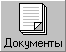
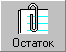
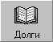
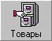
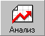
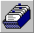
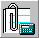
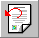
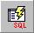

1. Введение
Программа «Склад» предназначена для оперативного ведения складского учёта. Ядром программы является SQL база данных в формате SQL сервера Firebird версии 1.5. Поэтому программа работает в режиме клиент сервер и может функционировать как на одной машине под управление операционной системы Windows XP / 7 / 8, так и в сети с выделенным сервером под управлением ОС Windows или Linux. С одной базой данных могут одновременно работать несколько пользователей, не нарушая целостности данных. Дополнительную информацию по работе сервера БД Firebird (Interbase) можно получить по адресу http://www.ibase.ru.

Установка клиентской части
- Настроить сеть с сервером, для этого:
- Подключть компьютер к сети (либо через хаб, либо если только 2 компьютера, то можно 0-модемным кабелем соединить их напрямую)
- Прописать IP адреса как на сервере, так и на клиентском компьютере (если нет DHTP сервера)
- В "Панель управления - Сетевые подключения (сеть)" найти "подключение по локальной сети" и открыть его свойства
- Если такого подключения нет, то надо корректно установить сетевую карту (драйвера)
- В окне свойств "подключения по локальной сети" найти компонент "Протокол Интернета (TCP/IP)" и открыть его свойства (кнопка "свойства")
- В окне свойств "Протокол Интернета (TCP/IP)" включить опцию "Использовать следующий IP адрес" и ввести следующие параметры:
IP адрес: 192.168.0.1 для сервера и любой неиспользованный от 192.168.0.2 до 192.168.0.255 для клиента
Маска подсети: 255.255.255.0
Основной шлюз: можно не указывать
- Установить правильную рабочую группу и имя компьютера в окне свойств "Мой компьютер". Рабочая группа длжна быть одинакова для всех компьютеров включенных в сеть. (После смены обычно требуется перезагрузка)
- Проверить связь с сервером можно через команду "ping 192.168.0.1" её можно набрать например в окне "Пуск - Выполнить" В ответ должно быть написаны 4 почти одинаковые строки со временем доступа или "нет ответа".
- Скопировать папку склад на диск С: (можно и на другой, но чтобы не путаться лучше везде делать одинаково)
- Можно установить из папки Distrib установку Firebird-1.5.6.5026-0-Win32.exe и выбрать при установке
"Minimal Client Install - no server, no tools".
!!!ВНИМАНИЕ: Но можно это и не делать, если в папке Skald уже есть библиотека доступа к Firebird GDS32.dll.
- Сделать ярлык для запуска программы на рабочем столе (для файла skald.exe) и запустить программу.
Программа предложит подключиться к базе "Sklad XXX" по адресу "192.168.0.1:c:\sklad\database\sklad_xxxx.gdb"
Т.е. к серверу с адресом "192.168.0.1" и к файлу на сервере "c:\sklad\database\sklad_xxxx.gdb"
Если у Вас другой адрес сервера или файл называется по другому, то надо нажать "отмена", а затем выбрать меню:
"сервис - база данных - открыть ..." и в диалоге указать:
- Сервер: "удалённый"
- Наименование или IP адрес: 192.168.0.1 (или другой адрес вашего сервера)
- Наименование файла базы данных: с:\sklad\database\sklad_xxx.gdb (или другой полный путь к существующему файлу на сервере) кнопка "Обзор" вам не поможет
- Псевдоним:Склад (или любое имя - идентификатор базы данных)
2. Настройка
Перед началом работы в программе склад необходимо прописать рабочую базу данных в списке баз данных программы для этого необходимо воспользоваться пунктом меню Сервис – Настройка. Формат записи следующий:
[Наименование]=[Сервер]:[Путь к файлу базы данных на сервере].
Если вы используете локальный Firebird сервер то можно указать только путь к файлу. Наименование также указывать необязательно.
Например:
Sklad XXX=192.168.0.1:d:\database\sklad_xxx.gdb
Sklad 2000=с:\archiv\sklad_2000.gdb
C:\archiv\sklad_1999.gdb
Можно также воспользоваться мастером: Сервис – Утилиты – Инструменты для администратора, который автоматически создаёт пустую базу данных на основании шаблона и может скопировать в неё информацию из уже существующей базу данных (Например: список товаров, клиентов, счета). Этот мастер автоматически внесёт новую базу данных в список баз данных. С помощью этого мастера можно архивировать и восстанавливать из архива базы данных с помощью серверной утилиты «gbak.exe» (конечно база данных должна быть локальной и утилита установлена на компьютере). А также оптимизировать базы данных, т.е. уменьшать размер и увеличивать быстродействие (см. документацию Firebird) используя последовательное выполнение архивации и восстановления.
В настройке также можно указать имя пользователя, роль и пароль(если вы не используете разграничение доступа) доступа к базе данных. Если отметить галочку «Запрашивать пароль при входе», то при обращении к базе данных будет запрашиваться пароль. По умолчанию имя пользователя SYSDBA а пароль masterkey.
В подразделе настройки – «Параметры» можно убрать галочку «Предварительный просмотр отчётов», при этом оперативные отчёты сразу будут отправлены на принтер. Имеется также множество других параметров, которые изменяются вручную или автоматически.
3. Разделы
Основными разделами программы являются:

Раздел «Документы»
является основным, в нём можно посмотреть, распечатать, а также добавить изменить или удалить любой документ, имеющий отношение к выбранному складу (о том как зарегистрировать склад в системе смотрите ниже по тексту про раздел «Клиенты»). Если сделать двойной щелчок мышью на нужном документе или нажать на кнопку «Просмотр» на панели инструментов, то можно получить форму для просмотра/редактирования документов. С помощью кнопки «Создать» можно создать новый документ, «Удалить» - удалить выделенный документ, а кнопки «Печать» напечатать или посмотреть на документ в окне предварительного просмотра.
Все документы разделены на две большие группы: Входящие и Исходящие.
-
Входящие – это документы, которые создаются на других складах или от других организаций, к ним относятся: приходные накладные, возвратные накладные от поставщиков, платёжные поручения от покупателей, заказы от покупателей.
-
Исходящие – это документы созданные на этом складе, т.е. накладные, возвратные накладные, кассовые ордера и платёжные поручения по оплате товара поставщикам.
Также документы (как входящие, так и исходящие) можно разделить на следующие группы:
-
Товарные документы – используются для ввода прихода или реализации товара их можно условно разбить на:
- Накладные
- Возвратные накладные
А также по способу оплаты на:
- Товарные чеки
- Накладные по безналичному расчёту
- Накладные по наличному расчёту
- Внутреннее перемещение - используется для перемещения товаров между подразделениями одного предприятия, такие накладные не включаются в товарооборот
- Экспорт товара – используется системой при экспорте товаров с одного склада на другой
- И др.
Платёжно–расчётные документы – используются для регистрации оплаты товаров покупателями или оплаты поставщикам, а также других оплат с помощью кассы.
Их можно разбить согласно виду оплаты:
- Приходно-расходные кассовые ордера
- Платёжные поручения
- И др.
Заказы – используются для ведения заказов покупателей их консолидации в один заказ, а также автоматическое создание накладной по имеющемуся товару на складе. Данный раздел находится на стадии доработки и поэтому работает не полнофункционально.

Раздел «Остаток»
служит для оперативного просмотра остатка товара на складе, в данном разделе возможна печать отчётов «Прайс-листа», «Остатка товаров» и «Ценников», а также возможно изменение цен на товары. Добавление, удаление или изменение остатка товаров в данном разделе не допускается. Для добавления товара необходимо ввести приходную накладную, а для изменения найти приходную накладную и изменить её. Обновление информации в разделе происходит автоматически. Если в базе данных появится несоответствие между приходом и расходом товара (в результате сбоев или некорректного ведения документов, хоть это практически исключено), то существует возможность скорректировать остаток товара на основе анализа приходных и расходных документов (Сервис – Утилиты – Скорректировать остаток товара).

Раздел «Долги»
служит для просмотра взаиморасчётов с покупателями и поставщиками на текущий момент времени. Этот раздел служит только для просмотра и печати отчётов: «Долги» и «Обороты с клиентом». Информация в разделе «Долги» обновляется автоматически после ввода дебитно – кредитных документов. Если в базе данных появится несоответствие между дебитом и кредитом (в результате сбоев или некорректного ведения документов, хоть это практически исключено), то существует возможность скорректировать долги на основе анализа дебитных и кредитных документов (Сервис – Утилиты – Скорректировать долги).
Раздел «Клиенты»
служит для ведения информации о клиентах. Т.е. поставщиках, покупателях, сотрудниках, а также информация по самому складу. Перед началом работы с программой необходимо зарегистрировать склад в разделе «Клиенты», для этого необходимо добавить нового клиента (кнопкой «Добавить»), ввести информацию о клиенте и перейти на страницу «Настройка склада». Нажать кнопку «Создать новый склад» и заполнить информацию о складе:
- Нумерация – в данном разделе можно ввести текущие номера документов, если необходима автоматическая нумерация.
- Цены – здесь можно указать следующие параметры:
- Торговую наценку - наценку на товар, которая используется для автоматического создания цены реализации
- Коэффициент округления цены – это число используется для округления в большую сторону цены реализации. По умолчанию используется коэффициент 100 – округление до копеек, если поставить 10 то цена будет округляться до 10 копеек, а если 1 – то до рублей
- Учет НДС – если включить эту галочку, то соответствующая галочка будет появляться при создании накладной, а значит будет учитываться НДС.
- Налог с продаж – имеет аналогичные функции, как и НДС.
- Включён в цену – означает, что цена на товар уже имеет в своём составе налог с продаж, иначе налог с продаж будет добавляться к цене на товар.
- Экспорт товаров – используется для автоматического создания накладной с одного склада зарегистрированного в программе на другой (при отпуске товара через склад посредник).
- Отчёты – здесь можно указать параметры некоторых отчётов:
- Заголовок и подзаголовок используются во всех отчётах вместе с изображением логотипа.
- Комментарии к накладной на реализацию используются соответственно перед и после списка товаров
- Комментарии в Прайс – лист печатаются в заголовке, где можно указать время работы и т.д.
- Логотип – картинка в растровом (*.bmp) или векторном формате (*.wmf) для отображения в Прайс – листе и других отчётах.
Необходимо отметить также значение полей «Наименование» и «Полное наименование» в составе информации о клиенте. «Наименование» используется внутри программы (на пример для поиска по имени) и должно быть кратким и удобным для поиска, а «Полное наименование» для отчётов (если его нет, то используется «Наименование») и может быть любым.

Раздел «Товары»
используется для ведения базы данных по товарам и услугам, которые используются для создания товарных накладных. В этом разделе можно добавлять, изменять и удалять товары, типы товаров, а также производителей товаров.
Удалять или изменять информацию о товарах крайне нежелательно, т.к. она изменится и в уже введённых накладных, а если вы удалите товар, то в накладной будет пустая строка.
Для добавления нового товара, необходимо нажать кнопку «Добавить» на панели инструментов и заполнить появившуюся форму. Для добавления нового типа товара необходимо встать на поле «Тип товара» и нажать сочетание клавиш Control+Insert и появится форма с информацией о типе товара (или нажать мышью на кнопку редактирования , а потом на кнопку «+» в открывшейся форме). Аналогично можно добавить нового производителя. Необходимо отметить способ формирования полного наименования товара для печати отчётов оно состоит из 4 полей: [Краткое наименование производителя] + [Краткое наименование типа товара] + [Наименование товара] + [Фасовка].

Раздел «Анализ»
служит для получения оперативной информации о работе склада. В состав «Анализа» входят параметрические запросы о приходе и реализации товара, с помощью которых легко можно узнать какой из товаров, или какая группа товаров оказалась наиболее выгодной за любой промежуток времени. Кто из покупателей больше всего купил товаров, и каких товаров. Информацию можно посмотреть как в табличном виде, так и на диаграмме, причём внешний вид диаграммы легко можно изменить. И др. информацию. Если вы можете сами составлять запросы на языке SQL, то можете сами добавить запрос. Для этого необходимо отредактировать файл «queries.xml» находящийся в папке «Склад» в любом текстовом редакторе.
4. Отчёты
Кроме стандартных печатных форм документов (Накладная, Счёт-фактура, Приходный/Расходный кассовый ордер, Платёжное поручение и др.) в программе можно получить отчёты по работе за указанный период, используя пункт меню Сервис – Печать. В этом пункте представлены следующие отчёты:
• Отчёт за день – используется для просмотра сводной информации о работе склада за указанный день.
• Отчёт по кассе – стандартная форма отчёта со списком всех приходных и расходных кассовых ордеров за любой промежуток времени.
• Прайс – лист – это Вы сами знаете что такое.
• Остаток товаров – список товаров на складе по приходной цене на текущий момент.
• Долги – взаиморасчёты с поставщиками и покупателями на текущий момент.
• Обороты с клиентом – взаиморасчёт с указанным покупателем или поставщиком за любой промежуток времени.
• Книга покупок – стандартная форма учёта приходных счетов – фактур за любой промежуток времени.
• Книга продаж – стандартная форма учёта исходящих счетов фактур за любой промежуток времени.
• Товарный отчёт – отчёт о реализации товара по каждой позиции в приходной накладной за любой промежуток времени.
• Книга учёта налога с продаж – форма учёта сбора налога с продаж с покупателей за любой промежуток времени.
5. Редактирование товарных документов
Все товарные документы имеют одну форму для редактирования информации. В зависимости от указанного вида оплаты документ будет относиться к той или иной группе. Порядок ввода информации и назначение полей:
- Перед началом ввода информации, рекомендуется указать, какой документ будет вводиться: приход или реализация, т.к. внешний вид (состав полей) зависит от этого. Однако это не принципиально, так как если для продавца данный документ является реализацией, то для покупателя он является приходом.
- Далее необходимо заполнить поля от кого (поставщик) и кому (покупатель), если данное поле не заполнилось автоматически. Для этого необходимо указать несколько первых символов наименования и при необходимости выбрать из списка. Если покупатель (поставщик) отсутствует в списке, то можно его внести в список, нажав Control + Insert или нажав на кнопку редактирования и добавить кнопкой «+» в открывшейся форме. Заполните необходимые пункты информации о клиенте и нажмите кнопку «Ok» (или Control + Enter).
- Если Вы хотите зарезервировать товар на складе, то можете отметить галочкой поле «Резервная». При этом указанный документ не будет входить в документооборот, а товар пометится как резервный и будет недоступен для продажи.
- Укажите номер и дату документа. Если Вы желаете, чтобы документу присвоился номер автоматически, то оставьте вместо номера текст «<авто>». Используя кнопку редактирования , Вы можете изменить текущий номер накладной (товарного чека). Укажите дату оплаты документа, если она отличается от даты реализации, эта дата используется в книге покупок.
- Укажите вид оплаты документа. Это ключевой момент, так как от этого зависит много других параметров (автоматическая нумерация, налог с продаж и др.). Если Вы указали кассовый ордер или кассовый чек, то имеется возможность автоматически создать соответствующий платёжно–расчётный документ. Для этого необходимо отметить галочкой и указать номер документа (или оставить «<авто>» для автоматической нумерации). Используя кнопку можно посмотреть связанный документ (только после сохранения товарного документа).
- Поля «Учёт НДС», «Налог с продаж» заполняются автоматически из настройки склада, если возникает необходимость, то их можно изменить.
- Если вы хотите создать возврат товара, то отметьте галочкой поле «Возврат».
- Поле «Товар со склада» автоматически заполняется при заполнении других полей. Если в программе зарегистрировано несколько полей, и Вы хотите отпустить товар, который находится в другом складе, то можете изменить значение этого поля. При сохранении такого документа автоматически будет сформирована накладная (внутреннее перемещение) с одного склада на другой с параметрами указанными в разделе «Экспорт» настройки склада.
- При необходимости укажите скидку или наценку, которая будет добавляться или убираться из цены на товар
- В таблице занесите все позиции, указывая количество, цену (при необходимости) и др. параметры. Для этого достаточно ввести несколько первых символов наименования товара и выбрать из списка. К сожалению, добавление нового товара в список возможно только через раздел «Товары», поэтому если Вы хотите ввести новый приход, то необходимо вначале внести в список все новые товары. Если после внесения в список всех товаров, Вы желаете изменить скидку, наценку, налог, НДС или другие параметры, влияющие на цену, то накладную достаточно пересчитать по позициям, нажав на соответствующую кнопку на панели инструментов.
- Если указано создать платёжно–расчётный документ и сумма оплаты не совпадает с суммой в накладной, то её можно изменить, отредактировав поле «Оплачено».
6. Редактирование платёжно–расчётных документов
Платёжно–расчётные документы служат для учёта расчётов с покупателями и поставщиками, а также возможно для ведения кассовой книги. Все документы данной группы имеют общую форму для редактирования. Порядок редактирования информации:
- Указать вид документа, а также можно указать, что данный документ резервный, т.е. его не надо учитывать в документообороте.
- Указать от кого исходит данный документ (кредитор для платёжного поручения и для расходного кассового ордера и дебитор для приходного кассового ордера) и кому от предназначен (дебитор для платёжного поручения и для расходного кассового ордера и кредитор для приходного кассового ордера). Порядок редактирования данных полей смотрите в разделе о редактировании товарных документов.
- Укажите номер и дату документа или оставьте «<авто>» для автоматической нумерации документа. Текущие номера документов можно изменить, нажав на кнопку редактирования .
- Введите основание документа – номер соответствующего счёта из плана счетов. Нажав на кнопку редактирования можно изменить или добавить новое основание. В зависимости от основания меняется и состав полей для дальнейшего редактирования. Так если в свойствах счёта указано «Долги» (значение 1) , то можно указать ссылку на товарный документ. Если указано «НДС», то появится возможность указать НДС и т.д.
- В поле приложение можно указать любую текстовую информацию
- Укажите сумму документа. Если это приходный документ для клиента который указан в поле «От кого» (приходно-кассовый ордер) то сумма должна быть положительной, если расходный (расходный кассовый ордер), то сумма должна быть отрицательной.
7. Панель инструментов
- Просмотр информации в режиме формы (документа, информации о клиенте, товаре) /Control+S/.
-  Просмотр информации в табличном виде /Control+S/.
 Печать отчётов (или предварительный просмотр) /Control+P/.
Печать отчётов (или предварительный просмотр) /Control+P/.- Обновление информации на экране (обновить запрос) /Control+Q/.
-  Пересчитать значения полей (пересчёт накладной по всем позициям).
- Добавить новый документ (клиента, товар) /Control+N/.
- Удалить текущий документ (клиента, товар) /Control+D/.
- Переход в режим (из режима) редактирования документа (клиентов, товаров) /Control+E/.
-  Отменить внесённые изменения /Control+Z/.
- Сохранить внесённые изменения в базу данных /Control+A/.
-  Выполнить запрос (операцию над данными) /Control+R/
8. Работа с таблицами
В таблицах используемых в программе имеется возможность сортировки данных практически по любому полю или группе полей. Для добавления поля сортировки необходимо нажать мышью на заголовок поля, удерживая клавишу Control. При повторном нажатии на поле, оно удалится из списка полей для сортировки. Если на заголовок поля нажать мышью без нажатой Control, то таблица отсортируется по указанному полю или изменится порядок сортировки.
Также в таблицах реализована возможность быстрого поиска значения поля. Для этого необходимо встать на нужное поле и удерживая клавишу Shift набрать начало искомого значения (скорость набора символов должна быть не менее 1символа в секунду).
9. Горячие клавиши
Запуск основных разделов (если нажата клавиша Shift, то раздел открывается в отдельном окне, таким образом можно открыть одновременно несколько копий одного раздела или несколько документов).
- Control [+ Shift] + 1 - Документы
- Control [+ Shift] + 2 - Остаток
- Control [+ Shift] + 3 - Долги
- Control [+ Shift] + 4 - Клиенты
- Control [+ Shift] + 5 - Товары
- Control [+ Shift] + 6 - Анализ
Панель инструментов:
- Control [+ Shift] + N - Создать документ (товар, клиента) (New)
- Control + D - Удалить документ (товар, клиента) (Delete)
- Control + P - Печать отчёта (Print)
- Control + Q - Обновить информацию в разделе (если другой пользователь её поменял)
- Control + S - Открыть документ (товар, клиента), переход между режимами таблица – форма
- Control + E - Переход в/из режима редактирования (Edit)
- Control + A - Сохранить (Apply) внесённые изменения
- Control + Z - Отменить внесённые изменения
Режим формы:
- Control + PageDown - Перейти к следующей записи в режиме формы (клиенты, товары и др.)
- Control + PageUp - Перейти к предыдущей записи в режиме формы (клиенты, товары и др.)
Режим редактирования данных :
- Control + Enter - Редактирование покупателей, поставщиков, тип товаров и производителей
- Control + Insert - Добавить нового покупателя, поставщика, тип товара и производителя
Режим таблицы:
- [Shift] + Enter - Открыть документ (товар, клиента)
- F2 - Переход в/из режима редактирования поля
- Tab - Переход между полями
- Insert - Добавить запись
- Control + Delete - Удалить запись
- Shift + A..Z,1..0 - Быстрый поиск записи